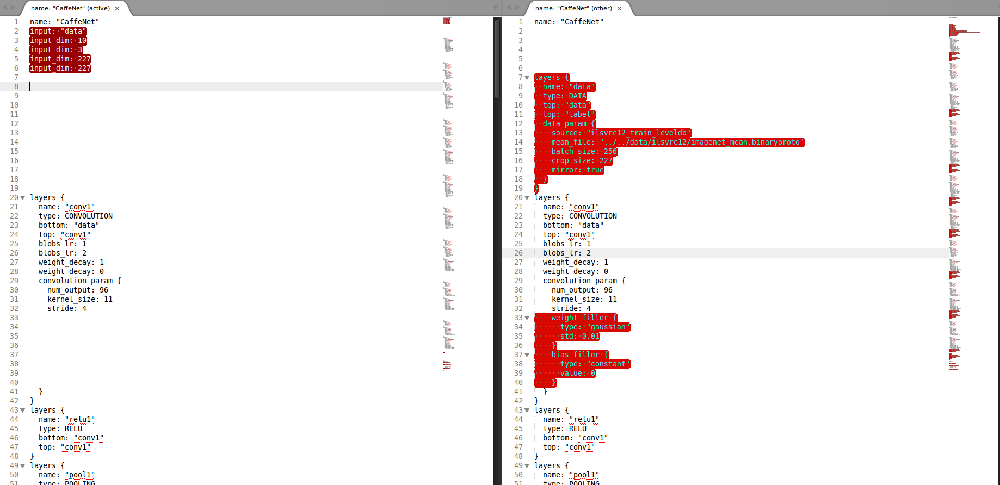
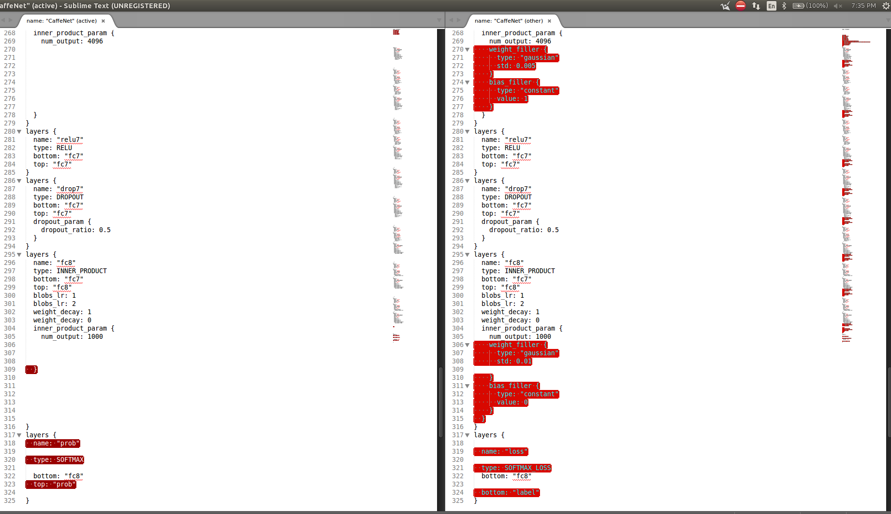

2015-06-08
Mon, 08 Jun 2015 16:35:47
so far today....:
* Spoke with Larry about the current status (showed the GOALS & TASKS DONE):

- Grabbed the caffe stuffs from https://github.com/zhenglilei/yaleB_recognition
- Trained it. It took just about a min.
Mon, 08 Jun 2015 16:42:53
#### Training
caffe train --solver=lenet_solver.prototxt
could have been caffe train --solver=lenet_solver.prototxt -gpu 0
#### Testing
Testing the yaleB_recognition caffe model.
praveen@praveen-Inspiron-7537:~/Copy/DiscoveryRobotics/deepLearning/workbench/yaleB_recognition$ caffe test -model lenet_train_test.prototxt -weights lenet_iter_50000.caffemodel -gpu 0 -iterations 100
I0608 16:46:09.835342 16571 caffe.cpp:147] Use GPU with device ID 0
I0608 16:46:09.968039 16571 net.cpp:287] The NetState phase (1) differed from the phase (0) specified by a rule in layer yaleB
I0608 16:46:09.968142 16571 net.cpp:42] Initializing net from parameters:
name: "LeNet"
state {
phase: TEST
}
layer {
name: "yaleB"
type: "Data"
top: "data"
top: "label"
include {
phase: TEST
}
data_param {
source: "yaleb_test_leveldb"
batch_size: 300
}
}
layer {
name: "flat1"
type: "Flatten"
bottom: "data"
top: "flat1"
}
layer {
name: "ip1"
type: "InnerProduct"
bottom: "flat1"
top: "ip1"
param {
lr_mult: 1
}
inner_product_param {
num_output: 100
bias_term: false
weight_filler {
type: "xavier"
}
}
}
layer {
name: "accuracy"
type: "Accuracy"
bottom: "ip1"
bottom: "label"
top: "accuracy"
include {
phase: TEST
}
}
layer {
name: "loss"
type: "SoftmaxWithLoss"
bottom: "ip1"
bottom: "label"
top: "loss"
}
I0608 16:46:09.968408 16571 layer_factory.hpp:74] Creating layer yaleB
I0608 16:46:09.968436 16571 net.cpp:90] Creating Layer yaleB
I0608 16:46:09.968451 16571 net.cpp:368] yaleB -> data
I0608 16:46:09.968482 16571 net.cpp:368] yaleB -> label
I0608 16:46:09.968499 16571 net.cpp:120] Setting up yaleB
I0608 16:46:09.981803 16571 db.cpp:20] Opened leveldb yaleb_test_leveldb
I0608 16:46:09.982182 16571 data_layer.cpp:67] output data size: 300,1,1,262
I0608 16:46:09.982698 16571 net.cpp:127] Top shape: 300 1 1 262 (78600)
I0608 16:46:09.982843 16571 net.cpp:127] Top shape: 300 (300)
I0608 16:46:09.982969 16571 layer_factory.hpp:74] Creating layer label_yaleB_1_split
I0608 16:46:09.983150 16571 net.cpp:90] Creating Layer label_yaleB_1_split
I0608 16:46:09.983279 16571 net.cpp:410] label_yaleB_1_split <- label
I0608 16:46:09.983423 16571 net.cpp:368] label_yaleB_1_split -> label_yaleB_1_split_0
I0608 16:46:09.983567 16571 net.cpp:368] label_yaleB_1_split -> label_yaleB_1_split_1
I0608 16:46:09.983711 16571 net.cpp:120] Setting up label_yaleB_1_split
I0608 16:46:09.983763 16571 net.cpp:127] Top shape: 300 (300)
I0608 16:46:09.983786 16571 net.cpp:127] Top shape: 300 (300)
I0608 16:46:09.983805 16571 layer_factory.hpp:74] Creating layer flat1
I0608 16:46:09.983834 16571 net.cpp:90] Creating Layer flat1
I0608 16:46:09.983853 16571 net.cpp:410] flat1 <- data
I0608 16:46:09.983878 16571 net.cpp:368] flat1 -> flat1
I0608 16:46:09.983901 16571 net.cpp:120] Setting up flat1
I0608 16:46:09.983922 16571 net.cpp:127] Top shape: 300 262 (78600)
I0608 16:46:09.983934 16571 layer_factory.hpp:74] Creating layer ip1
I0608 16:46:09.983958 16571 net.cpp:90] Creating Layer ip1
I0608 16:46:09.983974 16571 net.cpp:410] ip1 <- flat1
I0608 16:46:09.983991 16571 net.cpp:368] ip1 -> ip1
I0608 16:46:09.984012 16571 net.cpp:120] Setting up ip1
I0608 16:46:09.985399 16571 net.cpp:127] Top shape: 300 100 (30000)
I0608 16:46:09.985438 16571 layer_factory.hpp:74] Creating layer ip1_ip1_0_split
I0608 16:46:09.985458 16571 net.cpp:90] Creating Layer ip1_ip1_0_split
I0608 16:46:09.985471 16571 net.cpp:410] ip1_ip1_0_split <- ip1
I0608 16:46:09.985487 16571 net.cpp:368] ip1_ip1_0_split -> ip1_ip1_0_split_0
I0608 16:46:09.985505 16571 net.cpp:368] ip1_ip1_0_split -> ip1_ip1_0_split_1
I0608 16:46:09.985522 16571 net.cpp:120] Setting up ip1_ip1_0_split
I0608 16:46:09.985539 16571 net.cpp:127] Top shape: 300 100 (30000)
I0608 16:46:09.985553 16571 net.cpp:127] Top shape: 300 100 (30000)
I0608 16:46:09.985564 16571 layer_factory.hpp:74] Creating layer accuracy
I0608 16:46:09.985585 16571 net.cpp:90] Creating Layer accuracy
I0608 16:46:09.985597 16571 net.cpp:410] accuracy <- ip1_ip1_0_split_0
I0608 16:46:09.985611 16571 net.cpp:410] accuracy <- label_yaleB_1_split_0
I0608 16:46:09.985627 16571 net.cpp:368] accuracy -> accuracy
I0608 16:46:09.985646 16571 net.cpp:120] Setting up accuracy
I0608 16:46:09.985667 16571 net.cpp:127] Top shape: (1)
I0608 16:46:09.985679 16571 layer_factory.hpp:74] Creating layer loss
I0608 16:46:09.985698 16571 net.cpp:90] Creating Layer loss
I0608 16:46:09.985710 16571 net.cpp:410] loss <- ip1_ip1_0_split_1
I0608 16:46:09.985723 16571 net.cpp:410] loss <- label_yaleB_1_split_1
I0608 16:46:09.985777 16571 net.cpp:368] loss -> loss
I0608 16:46:09.985800 16571 net.cpp:120] Setting up loss
I0608 16:46:09.985819 16571 layer_factory.hpp:74] Creating layer loss
I0608 16:46:09.985967 16571 net.cpp:127] Top shape: (1)
I0608 16:46:09.985985 16571 net.cpp:129] with loss weight 1
I0608 16:46:09.986026 16571 net.cpp:192] loss needs backward computation.
I0608 16:46:09.986040 16571 net.cpp:194] accuracy does not need backward computation.
I0608 16:46:09.986054 16571 net.cpp:192] ip1_ip1_0_split needs backward computation.
I0608 16:46:09.986068 16571 net.cpp:192] ip1 needs backward computation.
I0608 16:46:09.986079 16571 net.cpp:194] flat1 does not need backward computation.
I0608 16:46:09.986093 16571 net.cpp:194] label_yaleB_1_split does not need backward computation.
I0608 16:46:09.986106 16571 net.cpp:194] yaleB does not need backward computation.
I0608 16:46:09.986117 16571 net.cpp:235] This network produces output accuracy
I0608 16:46:09.986130 16571 net.cpp:235] This network produces output loss
I0608 16:46:09.986155 16571 net.cpp:482] Collecting Learning Rate and Weight Decay.
I0608 16:46:09.986172 16571 net.cpp:247] Network initialization done.
I0608 16:46:09.986183 16571 net.cpp:248] Memory required for data: 992408
I0608 16:46:09.986769 16571 caffe.cpp:157] Running for 100 iterations.
I0608 16:46:10.065186 16571 caffe.cpp:181] Batch 0, accuracy = 0.99
I0608 16:46:10.065228 16571 caffe.cpp:181] Batch 0, loss = 0.664091
I0608 16:46:10.067217 16571 caffe.cpp:181] Batch 1, accuracy = 0.986667
I0608 16:46:10.067237 16571 caffe.cpp:181] Batch 1, loss = 0.779703
I0608 16:46:10.069246 16571 caffe.cpp:181] Batch 2, accuracy = 0.99
I0608 16:46:10.069262 16571 caffe.cpp:181] Batch 2, loss = 0.728975
I0608 16:46:10.071290 16571 caffe.cpp:181] Batch 3, accuracy = 0.98
I0608 16:46:10.071313 16571 caffe.cpp:181] Batch 3, loss = 0.771441
I0608 16:46:10.073320 16571 caffe.cpp:181] Batch 4, accuracy = 0.956667
I0608 16:46:10.073333 16571 caffe.cpp:181] Batch 4, loss = 0.719948
I0608 16:46:10.075321 16571 caffe.cpp:181] Batch 5, accuracy = 0.993333
I0608 16:46:10.075341 16571 caffe.cpp:181] Batch 5, loss = 0.575574
I0608 16:46:10.078213 16571 caffe.cpp:181] Batch 6, accuracy = 0.993333
I0608 16:46:10.078253 16571 caffe.cpp:181] Batch 6, loss = 0.826917
I0608 16:46:10.080759 16571 caffe.cpp:181] Batch 7, accuracy = 0.98
I0608 16:46:10.080813 16571 caffe.cpp:181] Batch 7, loss = 0.810963
I0608 16:46:10.082968 16571 caffe.cpp:181] Batch 8, accuracy = 0.986667
I0608 16:46:10.083000 16571 caffe.cpp:181] Batch 8, loss = 0.646252
I0608 16:46:10.085050 16571 caffe.cpp:181] Batch 9, accuracy = 0.96
I0608 16:46:10.085072 16571 caffe.cpp:181] Batch 9, loss = 0.742488
I0608 16:46:10.087299 16571 caffe.cpp:181] Batch 10, accuracy = 0.993333
I0608 16:46:10.087321 16571 caffe.cpp:181] Batch 10, loss = 0.648562
I0608 16:46:10.089565 16571 caffe.cpp:181] Batch 11, accuracy = 0.99
I0608 16:46:10.089589 16571 caffe.cpp:181] Batch 11, loss = 0.84166
I0608 16:46:10.092133 16571 caffe.cpp:181] Batch 12, accuracy = 0.98
I0608 16:46:10.092164 16571 caffe.cpp:181] Batch 12, loss = 0.737473
I0608 16:46:10.094413 16571 caffe.cpp:181] Batch 13, accuracy = 0.966667
I0608 16:46:10.094442 16571 caffe.cpp:181] Batch 13, loss = 0.731731
I0608 16:46:10.097903 16571 caffe.cpp:181] Batch 14, accuracy = 0.983333
I0608 16:46:10.098069 16571 caffe.cpp:181] Batch 14, loss = 0.648118
I0608 16:46:10.100770 16571 caffe.cpp:181] Batch 15, accuracy = 0.993333
I0608 16:46:10.100806 16571 caffe.cpp:181] Batch 15, loss = 0.687164
I0608 16:46:10.103262 16571 caffe.cpp:181] Batch 16, accuracy = 0.99
I0608 16:46:10.103284 16571 caffe.cpp:181] Batch 16, loss = 0.842076
I0608 16:46:10.105530 16571 caffe.cpp:181] Batch 17, accuracy = 0.98
I0608 16:46:10.105551 16571 caffe.cpp:181] Batch 17, loss = 0.715478
I0608 16:46:10.107935 16571 caffe.cpp:181] Batch 18, accuracy = 0.96
I0608 16:46:10.107961 16571 caffe.cpp:181] Batch 18, loss = 0.771718
I0608 16:46:10.110923 16571 caffe.cpp:181] Batch 19, accuracy = 0.99
I0608 16:46:10.110982 16571 caffe.cpp:181] Batch 19, loss = 0.621487
I0608 16:46:10.113736 16571 caffe.cpp:181] Batch 20, accuracy = 0.986667
I0608 16:46:10.113767 16571 caffe.cpp:181] Batch 20, loss = 0.709574
I0608 16:46:10.116338 16571 caffe.cpp:181] Batch 21, accuracy = 0.99
I0608 16:46:10.116405 16571 caffe.cpp:181] Batch 21, loss = 0.826639
I0608 16:46:10.118794 16571 caffe.cpp:181] Batch 22, accuracy = 0.983333
I0608 16:46:10.118818 16571 caffe.cpp:181] Batch 22, loss = 0.686587
I0608 16:46:10.121057 16571 caffe.cpp:181] Batch 23, accuracy = 0.963333
I0608 16:46:10.121075 16571 caffe.cpp:181] Batch 23, loss = 0.720623
I0608 16:46:10.123183 16571 caffe.cpp:181] Batch 24, accuracy = 0.986667
I0608 16:46:10.123206 16571 caffe.cpp:181] Batch 24, loss = 0.659647
I0608 16:46:10.125627 16571 caffe.cpp:181] Batch 25, accuracy = 0.99
I0608 16:46:10.125668 16571 caffe.cpp:181] Batch 25, loss = 0.814487
I0608 16:46:10.127841 16571 caffe.cpp:181] Batch 26, accuracy = 0.986667
I0608 16:46:10.127861 16571 caffe.cpp:181] Batch 26, loss = 0.730773
I0608 16:46:10.129981 16571 caffe.cpp:181] Batch 27, accuracy = 0.98
I0608 16:46:10.130013 16571 caffe.cpp:181] Batch 27, loss = 0.749342
I0608 16:46:10.132583 16571 caffe.cpp:181] Batch 28, accuracy = 0.96
I0608 16:46:10.132618 16571 caffe.cpp:181] Batch 28, loss = 0.709319
I0608 16:46:10.136236 16571 caffe.cpp:181] Batch 29, accuracy = 0.993333
I0608 16:46:10.136281 16571 caffe.cpp:181] Batch 29, loss = 0.613606
I0608 16:46:10.138638 16571 caffe.cpp:181] Batch 30, accuracy = 0.993333
I0608 16:46:10.138675 16571 caffe.cpp:181] Batch 30, loss = 0.848165
I0608 16:46:10.141307 16571 caffe.cpp:181] Batch 31, accuracy = 0.98
I0608 16:46:10.141345 16571 caffe.cpp:181] Batch 31, loss = 0.748472
I0608 16:46:10.144031 16571 caffe.cpp:181] Batch 32, accuracy = 0.98
I0608 16:46:10.144062 16571 caffe.cpp:181] Batch 32, loss = 0.69563
I0608 16:46:10.146206 16571 caffe.cpp:181] Batch 33, accuracy = 0.966667
I0608 16:46:10.146224 16571 caffe.cpp:181] Batch 33, loss = 0.739277
I0608 16:46:10.148214 16571 caffe.cpp:181] Batch 34, accuracy = 0.993333
I0608 16:46:10.148239 16571 caffe.cpp:181] Batch 34, loss = 0.659677
I0608 16:46:10.150285 16571 caffe.cpp:181] Batch 35, accuracy = 0.99
I0608 16:46:10.150310 16571 caffe.cpp:181] Batch 35, loss = 0.794068
I0608 16:46:10.152328 16571 caffe.cpp:181] Batch 36, accuracy = 0.98
I0608 16:46:10.152351 16571 caffe.cpp:181] Batch 36, loss = 0.776657
I0608 16:46:10.154412 16571 caffe.cpp:181] Batch 37, accuracy = 0.963333
I0608 16:46:10.154441 16571 caffe.cpp:181] Batch 37, loss = 0.737262
I0608 16:46:10.156644 16571 caffe.cpp:181] Batch 38, accuracy = 0.986667
I0608 16:46:10.156676 16571 caffe.cpp:181] Batch 38, loss = 0.626116
I0608 16:46:10.158967 16571 caffe.cpp:181] Batch 39, accuracy = 0.986667
I0608 16:46:10.158990 16571 caffe.cpp:181] Batch 39, loss = 0.6919
I0608 16:46:10.161104 16571 caffe.cpp:181] Batch 40, accuracy = 0.99
I0608 16:46:10.161134 16571 caffe.cpp:181] Batch 40, loss = 0.874923
I0608 16:46:10.164363 16571 caffe.cpp:181] Batch 41, accuracy = 0.983333
I0608 16:46:10.164402 16571 caffe.cpp:181] Batch 41, loss = 0.701419
I0608 16:46:10.166491 16571 caffe.cpp:181] Batch 42, accuracy = 0.963333
I0608 16:46:10.166523 16571 caffe.cpp:181] Batch 42, loss = 0.707905
I0608 16:46:10.168541 16571 caffe.cpp:181] Batch 43, accuracy = 0.99
I0608 16:46:10.168572 16571 caffe.cpp:181] Batch 43, loss = 0.667179
I0608 16:46:10.170843 16571 caffe.cpp:181] Batch 44, accuracy = 0.986667
I0608 16:46:10.170866 16571 caffe.cpp:181] Batch 44, loss = 0.778227
I0608 16:46:10.173168 16571 caffe.cpp:181] Batch 45, accuracy = 0.99
I0608 16:46:10.173192 16571 caffe.cpp:181] Batch 45, loss = 0.730019
I0608 16:46:10.177777 16571 caffe.cpp:181] Batch 46, accuracy = 0.98
I0608 16:46:10.177819 16571 caffe.cpp:181] Batch 46, loss = 0.776443
I0608 16:46:10.180438 16571 caffe.cpp:181] Batch 47, accuracy = 0.956667
I0608 16:46:10.180480 16571 caffe.cpp:181] Batch 47, loss = 0.716503
I0608 16:46:10.183302 16571 caffe.cpp:181] Batch 48, accuracy = 0.993333
I0608 16:46:10.183326 16571 caffe.cpp:181] Batch 48, loss = 0.573263
I0608 16:46:10.185806 16571 caffe.cpp:181] Batch 49, accuracy = 0.993333
I0608 16:46:10.185830 16571 caffe.cpp:181] Batch 49, loss = 0.83161
I0608 16:46:10.187867 16571 caffe.cpp:181] Batch 50, accuracy = 0.98
I0608 16:46:10.187885 16571 caffe.cpp:181] Batch 50, loss = 0.805295
I0608 16:46:10.190101 16571 caffe.cpp:181] Batch 51, accuracy = 0.986667
I0608 16:46:10.190122 16571 caffe.cpp:181] Batch 51, loss = 0.642958
I0608 16:46:10.192354 16571 caffe.cpp:181] Batch 52, accuracy = 0.96
I0608 16:46:10.192384 16571 caffe.cpp:181] Batch 52, loss = 0.758402
I0608 16:46:10.194703 16571 caffe.cpp:181] Batch 53, accuracy = 0.993333
I0608 16:46:10.194736 16571 caffe.cpp:181] Batch 53, loss = 0.633726
I0608 16:46:10.197137 16571 caffe.cpp:181] Batch 54, accuracy = 0.99
I0608 16:46:10.197165 16571 caffe.cpp:181] Batch 54, loss = 0.843339
I0608 16:46:10.199338 16571 caffe.cpp:181] Batch 55, accuracy = 0.98
I0608 16:46:10.199355 16571 caffe.cpp:181] Batch 55, loss = 0.736222
I0608 16:46:10.201340 16571 caffe.cpp:181] Batch 56, accuracy = 0.966667
I0608 16:46:10.201359 16571 caffe.cpp:181] Batch 56, loss = 0.734217
I0608 16:46:10.203567 16571 caffe.cpp:181] Batch 57, accuracy = 0.983333
I0608 16:46:10.203584 16571 caffe.cpp:181] Batch 57, loss = 0.658827
I0608 16:46:10.205595 16571 caffe.cpp:181] Batch 58, accuracy = 0.993333
I0608 16:46:10.205610 16571 caffe.cpp:181] Batch 58, loss = 0.674718
I0608 16:46:10.207618 16571 caffe.cpp:181] Batch 59, accuracy = 0.99
I0608 16:46:10.207631 16571 caffe.cpp:181] Batch 59, loss = 0.86175
I0608 16:46:10.209661 16571 caffe.cpp:181] Batch 60, accuracy = 0.98
I0608 16:46:10.209694 16571 caffe.cpp:181] Batch 60, loss = 0.696152
I0608 16:46:10.211686 16571 caffe.cpp:181] Batch 61, accuracy = 0.96
I0608 16:46:10.211700 16571 caffe.cpp:181] Batch 61, loss = 0.771946
I0608 16:46:10.213671 16571 caffe.cpp:181] Batch 62, accuracy = 0.99
I0608 16:46:10.213687 16571 caffe.cpp:181] Batch 62, loss = 0.623475
I0608 16:46:10.215672 16571 caffe.cpp:181] Batch 63, accuracy = 0.986667
I0608 16:46:10.215687 16571 caffe.cpp:181] Batch 63, loss = 0.717209
I0608 16:46:10.217653 16571 caffe.cpp:181] Batch 64, accuracy = 0.99
I0608 16:46:10.217669 16571 caffe.cpp:181] Batch 64, loss = 0.814175
I0608 16:46:10.219949 16571 caffe.cpp:181] Batch 65, accuracy = 0.983333
I0608 16:46:10.219969 16571 caffe.cpp:181] Batch 65, loss = 0.686363
I0608 16:46:10.222524 16571 caffe.cpp:181] Batch 66, accuracy = 0.963333
I0608 16:46:10.223511 16571 caffe.cpp:181] Batch 66, loss = 0.740004
I0608 16:46:10.225751 16571 caffe.cpp:181] Batch 67, accuracy = 0.986667
I0608 16:46:10.225793 16571 caffe.cpp:181] Batch 67, loss = 0.642124
I0608 16:46:10.228126 16571 caffe.cpp:181] Batch 68, accuracy = 0.99
I0608 16:46:10.228168 16571 caffe.cpp:181] Batch 68, loss = 0.818974
I0608 16:46:10.230361 16571 caffe.cpp:181] Batch 69, accuracy = 0.98
I0608 16:46:10.230381 16571 caffe.cpp:181] Batch 69, loss = 0.748875
I0608 16:46:10.232403 16571 caffe.cpp:181] Batch 70, accuracy = 0.986667
I0608 16:46:10.232421 16571 caffe.cpp:181] Batch 70, loss = 0.726954
I0608 16:46:10.234647 16571 caffe.cpp:181] Batch 71, accuracy = 0.96
I0608 16:46:10.234673 16571 caffe.cpp:181] Batch 71, loss = 0.709111
I0608 16:46:10.237035 16571 caffe.cpp:181] Batch 72, accuracy = 0.993333
I0608 16:46:10.237062 16571 caffe.cpp:181] Batch 72, loss = 0.611549
I0608 16:46:10.239241 16571 caffe.cpp:181] Batch 73, accuracy = 0.993333
I0608 16:46:10.239269 16571 caffe.cpp:181] Batch 73, loss = 0.867778
I0608 16:46:10.241276 16571 caffe.cpp:181] Batch 74, accuracy = 0.98
I0608 16:46:10.241288 16571 caffe.cpp:181] Batch 74, loss = 0.729398
I0608 16:46:10.243301 16571 caffe.cpp:181] Batch 75, accuracy = 0.98
I0608 16:46:10.243314 16571 caffe.cpp:181] Batch 75, loss = 0.700589
I0608 16:46:10.245390 16571 caffe.cpp:181] Batch 76, accuracy = 0.966667
I0608 16:46:10.245415 16571 caffe.cpp:181] Batch 76, loss = 0.737056
I0608 16:46:10.247408 16571 caffe.cpp:181] Batch 77, accuracy = 0.993333
I0608 16:46:10.247422 16571 caffe.cpp:181] Batch 77, loss = 0.66297
I0608 16:46:10.249415 16571 caffe.cpp:181] Batch 78, accuracy = 0.99
I0608 16:46:10.249431 16571 caffe.cpp:181] Batch 78, loss = 0.798243
I0608 16:46:10.251715 16571 caffe.cpp:181] Batch 79, accuracy = 0.98
I0608 16:46:10.251757 16571 caffe.cpp:181] Batch 79, loss = 0.768987
I0608 16:46:10.254149 16571 caffe.cpp:181] Batch 80, accuracy = 0.963333
I0608 16:46:10.254191 16571 caffe.cpp:181] Batch 80, loss = 0.745387
I0608 16:46:10.256559 16571 caffe.cpp:181] Batch 81, accuracy = 0.986667
I0608 16:46:10.256593 16571 caffe.cpp:181] Batch 81, loss = 0.615816
I0608 16:46:10.259001 16571 caffe.cpp:181] Batch 82, accuracy = 0.986667
I0608 16:46:10.259035 16571 caffe.cpp:181] Batch 82, loss = 0.702234
I0608 16:46:10.261445 16571 caffe.cpp:181] Batch 83, accuracy = 0.99
I0608 16:46:10.261474 16571 caffe.cpp:181] Batch 83, loss = 0.869792
I0608 16:46:10.263885 16571 caffe.cpp:181] Batch 84, accuracy = 0.983333
I0608 16:46:10.263912 16571 caffe.cpp:181] Batch 84, loss = 0.700735
I0608 16:46:10.266311 16571 caffe.cpp:181] Batch 85, accuracy = 0.963333
I0608 16:46:10.266337 16571 caffe.cpp:181] Batch 85, loss = 0.705447
I0608 16:46:10.268697 16571 caffe.cpp:181] Batch 86, accuracy = 0.99
I0608 16:46:10.268723 16571 caffe.cpp:181] Batch 86, loss = 0.665687
I0608 16:46:10.271121 16571 caffe.cpp:181] Batch 87, accuracy = 0.986667
I0608 16:46:10.271144 16571 caffe.cpp:181] Batch 87, loss = 0.777754
I0608 16:46:10.273517 16571 caffe.cpp:181] Batch 88, accuracy = 0.99
I0608 16:46:10.273540 16571 caffe.cpp:181] Batch 88, loss = 0.729075
I0608 16:46:10.275908 16571 caffe.cpp:181] Batch 89, accuracy = 0.98
I0608 16:46:10.275931 16571 caffe.cpp:181] Batch 89, loss = 0.783394
I0608 16:46:10.278313 16571 caffe.cpp:181] Batch 90, accuracy = 0.956667
I0608 16:46:10.278337 16571 caffe.cpp:181] Batch 90, loss = 0.711688
I0608 16:46:10.280532 16571 caffe.cpp:181] Batch 91, accuracy = 0.993333
I0608 16:46:10.280561 16571 caffe.cpp:181] Batch 91, loss = 0.578032
I0608 16:46:10.283885 16571 caffe.cpp:181] Batch 92, accuracy = 0.993333
I0608 16:46:10.283922 16571 caffe.cpp:181] Batch 92, loss = 0.84473
I0608 16:46:10.286284 16571 caffe.cpp:181] Batch 93, accuracy = 0.98
I0608 16:46:10.286317 16571 caffe.cpp:181] Batch 93, loss = 0.787792
I0608 16:46:10.288719 16571 caffe.cpp:181] Batch 94, accuracy = 0.983333
I0608 16:46:10.288749 16571 caffe.cpp:181] Batch 94, loss = 0.654573
I0608 16:46:10.291173 16571 caffe.cpp:181] Batch 95, accuracy = 0.963333
I0608 16:46:10.291214 16571 caffe.cpp:181] Batch 95, loss = 0.744049
I0608 16:46:10.293725 16571 caffe.cpp:181] Batch 96, accuracy = 0.993333
I0608 16:46:10.293767 16571 caffe.cpp:181] Batch 96, loss = 0.637222
I0608 16:46:10.296130 16571 caffe.cpp:181] Batch 97, accuracy = 0.99
I0608 16:46:10.296172 16571 caffe.cpp:181] Batch 97, loss = 0.844841
I0608 16:46:10.298583 16571 caffe.cpp:181] Batch 98, accuracy = 0.98
I0608 16:46:10.298614 16571 caffe.cpp:181] Batch 98, loss = 0.73651
I0608 16:46:10.300825 16571 caffe.cpp:181] Batch 99, accuracy = 0.963333
I0608 16:46:10.300853 16571 caffe.cpp:181] Batch 99, loss = 0.750174
I0608 16:46:10.300864 16571 caffe.cpp:186] Loss: 0.729134
I0608 16:46:10.300884 16571 caffe.cpp:198] accuracy = 0.981833
I0608 16:46:10.300918 16571 caffe.cpp:198] loss = 0.729134 (* 1 = 0.729134 loss)
Mon, 08 Jun 2015 19:30:21
####Converting train/test.prototxt to deploy.prototxt
============================
weight fillers, learning rate-decay-momentum params
also remove anything that is in the "Train" phase
- Remove
weight_filler:,bias_filler: - Modify the top-most layer and the bottom-most layer
#Example
DIff view showing the top-most layer. Deploy.prototxt on the left & train_test.prototxt on the right.

DIff view showing the bottom-most layer. Deploy.prototxt on the left & train_test.prototxt on the right.

=========================================
Few more tips
The deploy network will be created for you automatically. Once caffe implements their "all-in-one" nets feature, you will be able to specify which layers to include in the deploy file. Until then, these things are done automatically:
The last <b>SoftmaxWithLoss</b> layer is replaced with a <b>Softmax</b> layer.
All other loss layers and accuracy layers are removed.
---------------------------------------------------------------------------
IndexError Traceback (most recent call last)
<ipython-input-3-45529beeec53> in <module>()
----> 1 net=caffe.Classifier('lenet_train_test.prototxt','lenet_iter_50000.caffemodel')
/home/praveen/programs/caffe/python/caffe/classifier.pyc in __init__(self, model_file, pretrained_file, image_dims, mean, input_scale, raw_scale, channel_swap)
27
28 # configure pre-processing
---> 29 in_ = self.inputs[0]
30 self.transformer = caffe.io.Transformer(
31 {in_: self.blobs[in_].data.shape})
IndexError: list index out of range
Means that the network model (prototxt file) being loaded by the classifer is not the one for the deployment.
net=caffe.Classifier('train_test.prototxt,CAFFEMODEL) should be net=caffe.Classifier('deploy.prototxt,CAFFEMODEL)